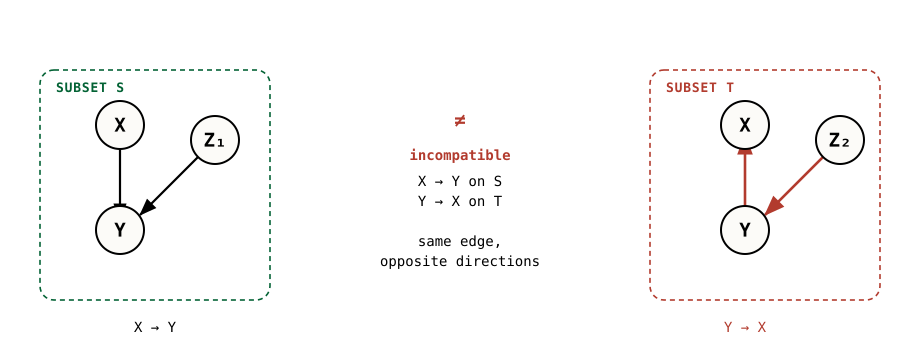
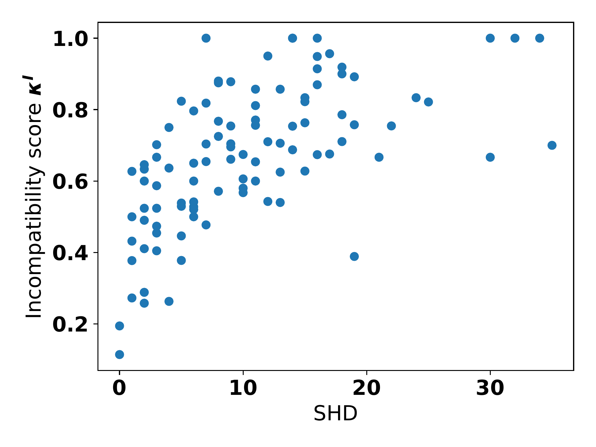
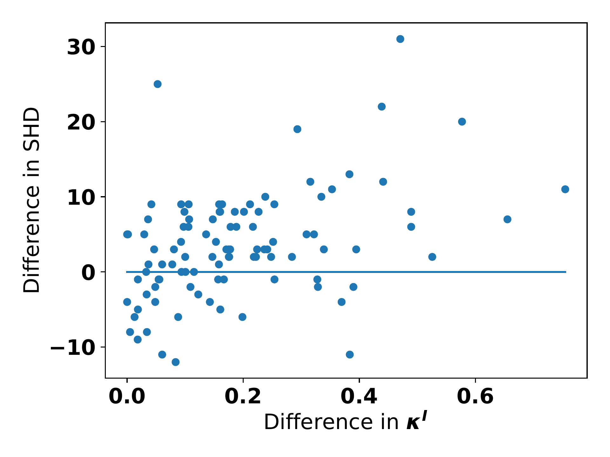

Self-Compatibility: Evaluating Causal Discovery without Ground Truth
Causal graphs learned on different subsets of variables must agree — and where they don’t, the algorithm can be falsified, no ground truth required.
Causal discovery algorithms are almost always evaluated on simulated data, because real-world causal ground truth is rare — yet simulations bake in preconceptions about noise, model classes, and more. This work proposes a way to falsify the output of a causal discovery algorithm without any ground truth. The key insight: while statistical learning seeks stability across subsets of data points, causal learning should seek stability across subsets of variables. Graphs an algorithm infers on overlapping variable subsets must be mutually compatible; detecting incompatibilities falsifies relations that stem from violated assumptions or finite-sample errors. A continuous incompatibility score relaxes this test and, in experiments, tracks structural Hamming distance to the true graph — making it a usable proxy for model selection when the truth is unknown.
The problem with evaluating causal discovery
Causal relationships are usually formalized as directed acyclic graphs and their generalizations (Pearl 2009; Spirtes et al. 2000), and a rich family of algorithms tries to recover such graphs from purely observational data. The catch is evaluation: causal ground truth is incredibly rare, because obtaining it typically requires real-world interventions that are expensive, sometimes unethical, and often simply ill-defined. As a consequence, causal discovery methods are evaluated almost exclusively on simulated data.
This is uncomfortable. Every algorithm rests on assumptions — faithfulness, additive noise, post-nonlinear models, independence-of-mechanism principles — and all of them can fail on real data. Recent benchmarking studies have raised exactly this concern about real-world applicability (Huang et al. 2021; Reisach et al. 2021). The paper asks a sharp question: can we check whether to trust a causal discovery algorithm’s output when we have no ground truth to compare against?
The proposed answer reframes what stability should mean for causal learning:
While statistical learning aims for stability across different subsets of data points, causal discovery should aim for stability across different subsets of variables.
If an algorithm has really found something causal, the graphs it infers on different but overlapping subsets of variables should fit together into a single coherent picture. When they don’t, the paper shows, something has gone wrong.
A motivating incompatibility
Consider a true model over X, Y, Z_1, Z_2, and two variable subsets S = \{X, Y, Z_1\} and T = \{X, Y, Z_2\}. A marginal causal model is a model that represents only a subset of the relevant variables — the causal analogue of a marginal distribution. Suppose the observed distribution violates faithfulness in one specific way (Y \perp\!\!\!\perp Z_2), and the PC algorithm (Spirtes et al. 2000) is run separately on S and on T.

The two marginal models disagree about the orientation of the X–Y edge, and they entail contradictory interventional statements: p(y \mid do(x)) = p(y \mid x) from S versus p(y \mid do(x)) = p(y) from T. Both cannot hold for one joint distribution. Crucially, an ordinary statistical cross-validation over data points would not surface this conflict, because the contradiction lives in the variable structure, not in held-out samples. This example motivates two formal notions of compatibility.
Two notions of compatibility
Throughout, the paper assumes an existence of a joint model: whenever several variable subsets and their distributions are considered, there is a single underlying DAG over a superset of variables whose marginals they are. Compatibility is then a property of a collection of marginal graphs relative to that joint world.
Interventional compatibility asks that the marginal models entail interventional probabilities that could come from one joint causal model: there exists a joint DAG G_V and distribution P_V with the right marginals such that every identifiable intervention p(x_i \mid do(x_j)) in a marginal graph agrees with the one derived from G_V. It is a natural requirement — a trustworthy algorithm should not make contradiction-free interventional claims impossible — but it depends on the distribution and on statistical tests.
Graphical compatibility instead asks that each marginal graph equals the latent projection of a common joint DAG onto that subset of variables. The latent projection (Pearl 2009) of a graph G onto S keeps the nodes in S, adds a directed edge when a directed path runs through hidden nodes, and adds a bidirected edge for confounding paths through hidden non-colliders. Graphical compatibility involves no statistical test, at the cost of implicit genericity assumptions.
The central object is self-compatibility — compatibility of the outputs an algorithm \mathcal{A} produces when run on different subsets of the same data. An algorithm’s output is observationally falsifiable if there is some joint distribution on which its subset outputs are incompatible in the large-sample limit. The paper proves the reassuring direction first:
If all of an algorithm’s assumptions are met, its subset outputs are interventionally and graphically compatible in the limit of infinite data.
So incompatibility is never a false alarm in the population limit — it signals either a violated assumption or a genuine finite-sample effect. The paper then shows that real algorithms are falsifiable: the FCI and Repetitive Causal Discovery (RCD) (Maeda and Shimizu 2020) algorithms admit distributions on which their subset outputs become interventionally incompatible. RCD builds on linear non-Gaussian models in the spirit of LiNGAM (Shimizu et al. 2006) but, like FCI, does not assume causal sufficiency.
A subtle but important point: this approach does not falsify a particular graph. An algorithm might even return the correct graph on the full variable set, yet still be caught producing incompatible models on some subset — in which case we still should not trust it.
Is self-compatibility actually a strong test?
At first glance, compatibility looks like a weak sanity check — a necessary but far-from-sufficient condition. The paper pushes back by connecting it to the causal marginal problem. An algorithm enables merging if there are marginals whose causal models pin down a unique joint distribution, even though more than one joint distribution is compatible with those marginals on purely probabilistic grounds. When that happens, every alternative joint distribution becomes a chance to falsify the output from passive observation alone.
The paper proves that FCI enables merging with respect to graphical compatibility on PAGs, and gives an analogous result for an idealized version of RCD. The mechanism is intuitive: when an algorithm asserts an unconfounded edge, it rules out a confounding path and thereby implies a conditional independence not visible in the marginals — which, together with the marginals, can fix the joint. In the language of Popper (Popper 1959), passing many such would-be falsifications is exactly what turns a necessary condition into strong evidence.
From a binary test to a usable score
A binary compatible/incompatible verdict is brittle in practice, so the paper introduces continuous incompatibility scores that relax the definitions.
The interventional incompatibility score \kappa^I counts, over all ordered pairs of variables, how often the algorithm’s adjustment-set–based effect estimates disagree across subsets — using the parametric agreement test of Su and Henckel (2022) — normalized by the number of pairs on which the algorithm commits to any falsifiable statement at all. Because that test is built for linear models, the paper also defines a graphical incompatibility score \kappa^G that needs no statistical test:
\kappa^G(\mathcal{A}, \mathbf{X}) \;=\; \frac{1}{k}\sum_{i \in [k]} \operatorname{SHD}\!\left(L(\mathcal{A}(\mathbf{X}), S_i),\; \mathcal{A}(\mathbf{X}_{S_i})\right),
the average structural Hamming distance between each marginal model and the latent projection of the full-data model onto that subset — zero exactly when the graphs match. The paper relates a low score to a notion of stability of the discovery algorithm across variable sets, drawing on the reinterpretation of causal discovery as a statistical-learning problem (Janzing et al. 2023): stable algorithms generalize statistical predictions across variable sets, just as data-stable algorithms generalize across data points.
Does the score track the truth?
Because the score is meant as a proxy for quality, the question is whether it correlates with an error measure that does require ground truth — the structural Hamming distance (SHD) to the true graph. The experiments use the RCD algorithm, one of the few that does not assume causal sufficiency.

The score and SHD are significantly correlated. Since both are influenced by graph density, the paper reports the partial correlation between \kappa^I and SHD controlling for the average node degree of the true graph: it is 0.52, with a p-value of 3\times10^{-8}. This is the headline evidence that an incompatibility score — computable with no ground truth — can stand in for SHD, which cannot.
Using the score for model selection
If the score tracks SHD, it should help choose between configurations. The authors use \kappa^I to pick between two RCD hyperparameter settings (all independence-test thresholds at 0.1 versus 0.001) on each of the 100 datasets, then check whether the chosen setting really had the lower SHD.

Selecting the configuration with the better (lower) \kappa^I recovers the better or equally good model 72% of the time. Looking only at strict differences, 68% of datasets land strictly above the line and 28% below — and in most of the cases where the score picked the worse model, the two scores were close, so the miscalls tend to be on near-ties rather than confident mistakes.
On real data
Finally, the score is applied to the Sachs et al. (2005) protein-signaling dataset, a standard real-world benchmark. Every algorithm tried performed markedly worse here than on simulated data — and the incompatibility score reflected that, giving medium-to-bad scores in two of four cases. Encouragingly, the cases where the score was good were exactly the ones with the best SHD and F_1 relative to the known reference network — a small but real-data check that a clean compatibility verdict lines up with a genuinely better recovered graph.
Why it matters
The method is deliberately asymmetric: it can only falsify, never certify. Passing a compatibility test is a necessary, not a sufficient, condition for a correct causal model, and the paper is explicit that there is no theoretical guarantee that a good score implies good performance, nor any prescription for how self-compatible is “good enough.” What it offers instead is something the field has largely lacked: a principled, ground-truth-free way to reject causal discovery outputs, and a continuous score that — empirically — behaves like the error metric we wish we could always measure.
The two result plots on this page are reproduced from the original paper, which is released under CC BY 4.0. The variable-subset diagram is a schematic drawn by the editors of this page from the paper’s motivating example. A copyable BibTeX entry for this page is generated below.
Citation
@inproceedings{m._faller2024,
author = {M. Faller, Philipp and Chennuru Vankadara, Leena and A.
Mastakouri, Atalanti and Locatello, Francesco and Janzing, Dominik},
title = {Self-Compatibility: {Evaluating} {Causal} {Discovery} Without
{Ground} {Truth}},
booktitle = {Proceedings of the 27th International Conference on
Artificial Intelligence and Statistics (AISTATS)},
date = {2024-03-15},
url = {https://proceedings.mlr.press/v238/faller24a.html}
}